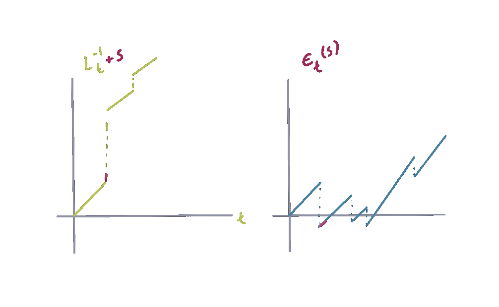

In simple words, excursions can be understood as chunks of stochastic processes that start and finish under certain conditions, for Lévy processes, excursions are independent entre ellas y con la misma distribución, entonces se vuelven una herramienta útil para abordar problemas y de hecho brindan una interpretación a grandes resultados probabilísticos como la descomposición de wiener-hopf. Una forma sencilla de entender cómo están definidas las excursiones es con el ejemplo de para la caminata aleatoria, que introduzco a continuación.
Let \(Z_1,Z_2,...,\) be independent identically distributed random variables with common distribution function \(F\) such that \(0<F(0)<1\) and \(P(Z_1=0)=0\), let us define \(Y_0=0\) and \(Y_n=\sum_{i=1}^nZ_i\) for \(n\geq 1\). Define the following stopping time \(\sigma_x^+=\inf\{n\geq 1:Y_n>x\}\). With these elements we propose the following path decomposition. Define \(T_0=0\) and \(H_0=0\). Let \(T_1:=\sigma_0^+\) and \[H_1\begin{cases} Y_{T_1} & \text{ if } T_1<\infty\\ \infty & \text{ if } T_1=\infty. \end{cases}\]Next, we construct iteratively the variables \(T_1,T_2,...\) and \(H_1,H_2,...\) in such a way that \[T_n:=\begin{cases} \inf\{n>T_{n-1}:Y_t>H_{n-1}\} & \text{ if } T_{n-1}<\infty \\ \infty & \text{ if } T_n=\infty \end{cases} \] and \[H_n:=\begin{cases} Y_{T_n} & \text{ if } T_{n-1}<\infty \\ \infty & \text{ if } T_n=\infty. \end{cases} \] Note that for each \(n\geq 1\), \(T_{n+1}-T_n\) is equal in distribution to \(T_1\). The strong Markov property aand stationary independent increments imply that, on \(\{T_{n-1}<\infty\}\), the path \[\begin{equation} \epsilon_{n}=\{Y_n-Y_{T_{n-1}}: T_{n-1} < n \leq T_n\}, \end{equation}\] also known as an \(Y\), is independent of \(\sigma(Y_{T_{k}}: k\leq n-1)\) and has the same law as \[\{Y_n:0<n \leq \sigma_0^+\}.\]
El elemento crucial en la construcción de las excursiones para la caminata aleatoria es la secuencia de variables \(\{T_n:n\geq 1\}\) que juega el rol de indexar el conjunto de los nuevos máximos. Es claro que este conjunto de nuevos máximos forma un conjunto discreto. Para un proceso de Lévy en general, in a finite time interval an infinite number of excursions can occur, luego enumerar excursiones es bastante más complicado. Para tal fin se introduce la herramienta de .
A continuación hago la construcción formal de excursiones from the maximum para cualquier proceso de Lévy unidimensional. La construcción de un local time apropiado para cada caso particular de procesos de Lévy no es trivial, por lo cual caracterizamos a este proceso con dos propiedades. Antes de mencionar tales propiedades definamos por \(X=(X_t:t\geq 0)\) a un proceso de Lévy unidimensional con probabilidades \((\mathbb{P}_x,x\in \mathbb{R}).\)
A partir de estas dos reglas podemos definir de manera similar el local time at a point \(a\), o el local time at the minimum.
Si consideramos a \(X\) un proceso de Poisson compuesto con drift positivo. Debido a la piecewise linearity of the paths of these processes, over any finite time horizon, the time spend at the maximum has strictly positive Lebesgue measure with probability one. Hence, the quantity \[L_t:=\int_0^t\mathbf{1}_{\{\sup_{u\leq s}X_u=X_s\}}ds, \quad t \geq 0,\] is almost surely positive and may be taken as a candidate for local time. En general, el que exista un Local time continuo, como el anterior, depende de la regularidad de las trayectorias del proceso.
Now that we have established the concept of local time at the maximum for any Lévy process, we can give the general decomposition of the path of a Lévy process in termis of its excursions from the maximum.
Ejemplos distintos a las excursiones from the maximum (or from the minimum), son las excursiones desde máximos o mínimos radiales que hace un proceso estable \(d\)-dimensional, éstas fueron definidas en y serán abordadas en el siguiente capítulo. También las excursiones from hyperplanes fueron estudiadas ya en y los resultados de tal artículo se comentan a continuación.
We offer full-service catering for any event, large or small. We understand your needs and we will cater the food to satisfy the biggerst criteria of them all, both look and taste. Do not hesitate to contact us.
Catering Service, 42nd Living St, 43043 New York, NY
You can also contact us by phone 00553123-2323 or email catering@catering.com, or you can send us a message here: